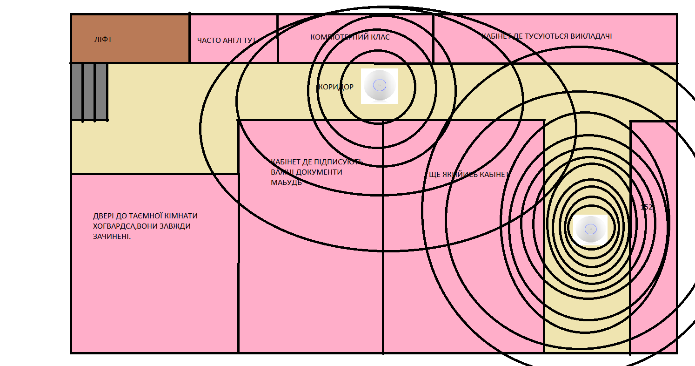
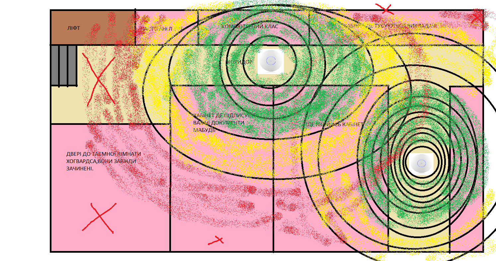

ЛАБОРАТОРНА РОБОТА №4
Комп’ютерні мережі
Тема: Планування розбудови WiFi мережі та аналіз сигналу покриття
Комп’ютерні мережі
Тема: Планування розбудови WiFi мережі та аналіз сигналу покриття
Мета роботи
Ознайомитися з основами проєктування бездротових мереж, навчитися планувати розміщення точок доступу та оцінювати покриття Wi-Fi сигналу на прикладі обладнання Ubiquiti UniFi U7-LR та Ubiquiti UniFi Switch ES-24-250W.
Хід роботи
1.
Оцінка потреб мережі
1.Визначити загальні кількість користувачів
2.Оцінити необхідну пропускну здатність
Після обходу всіх аудиторій та опитування студентів хто підключається до wi-fi нашого факультету було визначено, що 40 користувачів на 3 поверсі знають пароль від університетського WiFi та активно користуються ним для добрих справ.
1.Визначити загальні кількість користувачів
2.Оцінити необхідну пропускну здатність
Після обходу всіх аудиторій та опитування студентів хто підключається до wi-fi нашого факультету було визначено, що 40 користувачів на 3 поверсі знають пароль від університетського WiFi та активно користуються ним для добрих справ.
2.
Планування точок доступу
1.Визначити оптимальну кількість точок доступу Ubiquiti UniFi U7-LR, U6-LR (вказати наявні)
2.Запропонувати їх розміщення на одному поверсі
Для надійного покриття всього поверху було вирішено встановити 2 точки доступу:
• Перша точка — біля компютерного класу,так як там проходять часті заняття по програмуванні,і треба хороший сигнал щоб студенти могли користуватися інтернетом безперебійно для пошуку інформації яку їм потрібно
• Друга точка — біля 152 (охоплює частину біля 152,якраз до компютерного класу);
Малюнок 1, 2 — розміщення та зони покриття точок доступу.
1.Визначити оптимальну кількість точок доступу Ubiquiti UniFi U7-LR, U6-LR (вказати наявні)
2.Запропонувати їх розміщення на одному поверсі
Для надійного покриття всього поверху було вирішено встановити 2 точки доступу:
• Перша точка — біля компютерного класу,так як там проходять часті заняття по програмуванні,і треба хороший сигнал щоб студенти могли користуватися інтернетом безперебійно для пошуку інформації яку їм потрібно
• Друга точка — біля 152 (охоплює частину біля 152,якраз до компютерного класу);
Малюнок 1, 2 — розміщення та зони покриття точок доступу.

3.
Частотне планування
Для ефективної роботи мережі було виконано розподіл частотних діапазонів:й вибрано 5 GHZ по причині недуже довгих коридорів ,і аудиторій,в основному студенти навчаються або в 152 або в компютерному класі.
• Діапазон 2,4 GHz — рекомендовано використовувати в коридорах та великих приміщеннях завдяки кращій проникній здатності через стіни.
• Діапазон 5 GHz — рекомендовано для комп’ютерних аудиторій, лабораторій та місць з великою кількістю користувачів завдяки вищій швидкості та меншій інтерференції.
Для ефективної роботи мережі було виконано розподіл частотних діапазонів:й вибрано 5 GHZ по причині недуже довгих коридорів ,і аудиторій,в основному студенти навчаються або в 152 або в компютерному класі.
• Діапазон 2,4 GHz — рекомендовано використовувати в коридорах та великих приміщеннях завдяки кращій проникній здатності через стіни.
• Діапазон 5 GHz — рекомендовано для комп’ютерних аудиторій, лабораторій та місць з великою кількістю користувачів завдяки вищій швидкості та меншій інтерференції.
4.
Схема мережі
Побудовано таку схему підключення: Інтернет → Роутер → Комутатор Ubiquiti UniFi Switch ES-24-250W → Точки доступу (AP).
Також передбачено створення гостьової мережі з окремою підмережею IP-адрес, власним DHCP-сервером та обмеженим доступом до внутрішніх ресурсів.
Побудовано таку схему підключення: Інтернет → Роутер → Комутатор Ubiquiti UniFi Switch ES-24-250W → Точки доступу (AP).
Також передбачено створення гостьової мережі з окремою підмережею IP-адрес, власним DHCP-сервером та обмеженим доступом до внутрішніх ресурсів.
5.
Аналіз покриття сигналу
Рівень сигналу на схемі позначено трьома кольорами:
• Зелений — хороший рівень сигналу;
• Жовтий — задовільний (можливі незначні просадки швидкості);
• Червоний — слабкий сигнал.
Найпроблемнішими зонами виявились біля ліфта ,де мало хто буде користуватися інтернетом ,тому це все нам підходить.
Рівень сигналу на схемі позначено трьома кольорами:
• Зелений — хороший рівень сигналу;
• Жовтий — задовільний (можливі незначні просадки швидкості);
• Червоний — слабкий сигнал.
Найпроблемнішими зонами виявились біля ліфта ,де мало хто буде користуватися інтернетом ,тому це все нам підходить.

Висновки
У ході виконання лабораторної роботи №4 я ознайомився з принципами планування Wi-Fi мережі.
Навчився оцінювати кількість користувачів, розраховувати необхідну пропускну здатність, планувати розміщення точок доступу,
проводити частотне планування та аналізувати покриття сигналу.
Також було розглянуто питання побудови схеми мережі та створення гостьової мережі. Отримані знання та навички роботи з плануванням бездротових мереж можливо будуть корисними для мене в майбутньому.
Також було розглянуто питання побудови схеми мережі та створення гостьової мережі. Отримані знання та навички роботи з плануванням бездротових мереж можливо будуть корисними для мене в майбутньому.